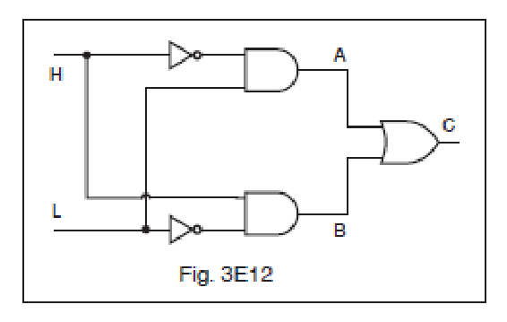
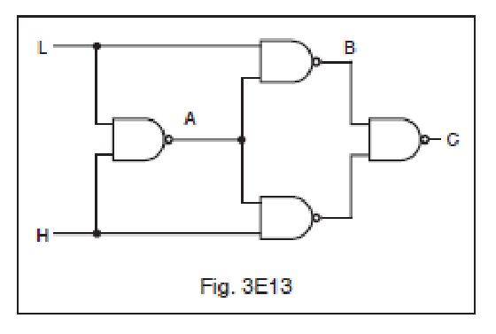
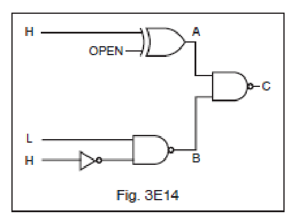

All 48 FCC GROL questions for 3E Digital Logic with the correct answers marked, from the official current FCC question pool. Test yourself with the free practice exam.
3-33E1
What is the voltage range considered to be valid logic low input in a TTL device operating at 5 volts?
A. 2.0 to 5.5 volts.
B. -2.0 to -5.5 volts.
C. Zero to 0.8 volts. ✓
D. 5.2 to 34.8 volts.
3-33E2
What is the voltage range considered to be a valid logic high input in a TTL device operating at 5.0 volts?
A. 2.0 to 5.5 volts. ✓
B. 1.5 to 3.0 volts.
C. 1.0 to 1.5 volts.
D. 5.2 to 34.8 volts.
3-33E3
What is the common power supply voltage for TTL series integrated circuits?
A. 12 volts.
B. 13.6 volts.
C. 1 volt.
D. 5 volts. ✓
3-33E4
TTL inputs left open develop what logic state?
A. A high-logic state. ✓
B. A low-logic state.
C. Open inputs on a TTL device are ignored.
D. Random high- and low-logic states.
3-33E5
Which of the following instruments would be best for checking a TTL logic circuit?
A. VOM.
B. DMM.
C. Continuity tester.
D. Logic probe. ✓
3-33E6
What do the initials TTL stand for?
A. Resistor-transistor logic.
B. Transistor-transistor logic. ✓
C. Diode-transistor logic.
D. Emitter-coupled logic.
3-34E1
What is a characteristic of an AND gate?
A. Produces a logic “0” at its output only if all inputs are logic “1”.
B. Produces a logic “1” at its output only if all inputs are logic “1”. ✓
C. Produces a logic “1” at its output if only one input is a logic “1”.
D. Produces a logic “1” at its output if all inputs are logic “0”.
3-34E2
What is a characteristic of a NAND gate?
A. Produces a logic “0” at its output only when all inputs are logic “0”.
B. Produces a logic “1” at its output only when all inputs are logic “1”.
C. Produces a logic “0” at its output if some but not all of its inputs are logic “1”.
D. Produces a logic “0” at its output only when all inputs are logic “1”. ✓
3-34E3
What is a characteristic of an OR gate?
A. Produces a logic “1” at its output if any input is logic “1”. ✓
B. Produces a logic “0” at its output if any input is logic “1”.
C. Produces a logic “0” at its output if all inputs are logic “1”.
D. Produces a logic “1” at its output if all inputs are logic “0”.
3-34E4
What is a characteristic of a NOR gate?
A. Produces a logic “0” at its output only if all inputs are logic “0”.
B. Produces a logic “1” at its output only if all inputs are logic “1”.
C. Produces a logic “0” at its output if any or all inputs are logic “1”. ✓
D. Produces a logic “1” at its output if some but not all of its inputs are logic “1”.
3-34E5
What is a characteristic of a NOT gate?
A. Does not allow data transmission when its input is high.
B. Produces a logic “0” at its output when the input is logic “1” and vice versa. ✓
C. Allows data transmission only when its input is high.
D. Produces a logic "1" at its output when the input is logic "1" and vice versa.
3-34E6
Which of the following logic gates will provide an active high out when both inputs are active high?
A. NAND.
B. NOR.
C. AND. ✓
D. XOR.
3-35E1
In a negative-logic circuit, what level is used to represent a logic 0?
A. Low level.
B. Positive-transition level.
C. Negative-transition level.
D. High level. ✓
3-35E2
For the logic input levels shown in Figure 3E12, what are the logic levels of test points A, B and C in this circuit? (Assume positive logic.)

A. A is high, B is low and C is low.
B. A is low, B is high and C is high. ✓
C. A is high, B is high and C is low.
D. A is low, B is high and C is low.
3-35E3
For the logic input levels given in Figure 3E13, what are the logic levels of test points A, B and C in this circuit? (Assume positive logic.)

A. A is low, B is low and C is high.
B. A is low, B is high and C is low.
C. A is high, B is high and C is high. ✓
D. A is high, B is low and C is low.
3-35E4
In a positive-logic circuit, what level is used to represent a logic 1?
A. High level ✓
B. Low level
C. Positive-transition level
D. Negative-transition level
3-35E5
Given the input levels shown in Figure 3E14 and assuming positive logic devices, what would the output be?

A. A is low, B is high and C is high. ✓
B. A is high, B is high and C is low.
C. A is low, B is low and C is high.
D. None of the above are correct.
3-35E6
What is a truth table?
A. A list of input combinations and their corresponding outputs that characterizes a digital device’s function. ✓
B. A table of logic symbols that indicate the high logic states of an op-amp.
C. A diagram showing logic states when the digital device’s output is true.
D. A table of logic symbols that indicates the low logic states of an op-amp.
3-36E1
A flip-flop circuit is a binary logic element with how many stable states?
A. 1
B. 2 ✓
C. 4
D. 8
3-36E2
What is a flip-flop circuit? A binary sequential logic element with ___stable states.
A. 1
B. 4
C. 2 ✓
D. 8
3-36E3
How many flip-flops are required to divide a signal frequency by 4?
A. 1
B. 4
C. 8
D. 2 ✓
3-36E4
How many bits of information can be stored in a single flip-flop circuit?
A. 1 ✓
B. 2
C. 3
D. 4
3-36E5
How many R-S flip-flops would be required to construct an 8 bit storage register?
A. 2
B. 4
C. 8 ✓
D. 16
3-36E6
An R-S flip-flop is capable of doing all of the following except:
A. Accept data input into R-S inputs with CLK initiated.
B. Accept data input into PRE and CLR inputs without CLK being initiated.
C. Refuse to accept synchronous data if asynchronous data is being input at same time.
D. Operate in toggle mode with R-S inputs held constant and CLK initiated. ✓
3-37E1
The frequency of an AC signal can be divided electronically by what type of digital circuit?
A. Free-running multivibrator.
B. Bistable multivibrator. ✓
C. OR gate.
D. Astable multivibrator.
3-37E2
What is an astable multivibrator?
A. A circuit that alternates between two stable states.
B. A circuit that alternates between a stable state and an unstable state.
C. A circuit set to block either a 0 pulse or a 1 pulse and pass the other.
D. A circuit that alternates between two unstable states. ✓
3-37E3
What is a monostable multivibrator?
A. A circuit that can be switched momentarily to the opposite binary state and then returns after a set time to its original state. ✓
B. A “clock” circuit that produces a continuous square wave oscillating between 1 and 0.
C. A circuit designed to store one bit of data in either the 0 or the 1 configuration.
D. A circuit that maintains a constant output voltage, regardless of variations in the input voltage.
3-37E4
What is a bistable multivibrator circuit commonly named?
A. AND gate.
B. OR gate.
C. Clock.
D. Flip-flop. ✓
3-37E5
What is a bistable multivibrator circuit?
A. Flip-flop. ✓
B. AND gate.
C. OR gate.
D. Clock.
3-37E6
What wave form would appear on the voltage outputs at the collectors of an astable, multivibrator, common-emitter stage?
A. Sine wave.
B. Sawtooth wave.
C. Square wave. ✓
D. Half-wave pulses.
3-38E1
What is the name of the semiconductor memory IC whose digital data can be written or read, and whose memory word address can be accessed randomly?
A. ROM – Read-Only Memory.
B. PROM – Programmable Read-Only Memory.
C. RAM – Random-Access Memory. ✓
D. EPROM – Electrically Programmable Read-Only Memory.
3-38E2
What is the name of the semiconductor IC that has a fixed pattern of digital data stored in its memory matrix?
A. RAM – Random-Access Memory.
B. ROM – Read-Only Memory. ✓
C. Register.
D. Latch.
3-38E3
What does the term “IO” mean within a microprocessor system?
A. Integrated oscillator.
B. Integer operation.
C. Input-output. ✓
D. Internal operation.
3-38E4
What is the name for a microprocessor’s sequence of commands and instructions?
A. Program. ✓
B. Sequence.
C. Data string.
D. Data execution.
3-38E5
How many individual memory cells would be contained in a memory IC that has 4 data bus input/output pins and 4 address pins for connection to the address bus?
A. 8
B. 16
C. 32
D. 64 ✓
3-38E6
What is the name of the random-accessed semiconductor memory IC that must be refreshed periodically to maintain reliable data storage in its memory matrix?
A. ROM – Read-Only Memory.
B. DRAM – Dynamic Random-Access Memory. ✓
C. PROM – Programmable Read-Only Memory.
D. PRAM – Programmable Random-Access Memory.
3-39E1
In a microprocessor-controlled two-way radio, a “watchdog” timer:
A. Verifies that the microprocessor is executing the program. ✓
B. Assures that the transmission is exactly on frequency.
C. Prevents the transmitter from exceeding allowed power out.
D. Connects to the system RADAR presentation.
3-39E2
What does the term “DAC” refer to in a microprocessor circuit?
A. Dynamic access controller.
B. Digital to analog converter. ✓
C. Digital access counter.
D. Dial analog control.
3-39E3
Which of the following is not part of a MCU processor?
A. RAM
B. ROM
C. I/O
D. Voltage Regulator ✓
3-39E4
What portion of a microprocessor circuit is the pulse generator?
A. Clock ✓
B. RAM
C. ROM
D. PLL
3-39E5
In a microprocessor, what is the meaning of the term “ALU”?
A. Automatic lock/unlock.
B. Arithmetical logic unit. ✓
C. Auto latch undo.
D. Answer local unit.
3-39E6
What circuit interconnects the microprocessor with the memory and input/output system?
A. Control logic bus.
B. PLL line.
C. Data bus line. ✓
D. Directional coupler.
3-40E1
What is the purpose of a prescaler circuit?
A. Converts the output of a JK flip-flop to that of an RS flip-flop.
B. Multiplies an HF signal so a low-frequency counter can display the operating frequency.
C. Prevents oscillation in a low frequency counter circuit.
D. Divides an HF signal so that a low-frequency counter can display the operating frequency. ✓
3-40E2
What does the term “BCD” mean?
A. Binaural coded digit.
B. Bit count decimal.
C. Binary coded decimal. ✓
D. Broad course digit.
3-40E3
What is the function of a decade counter digital IC?
A. Decode a decimal number for display on a seven-segment LED display.
B. Produce one output pulse for every ten input pulses. ✓
C. Produce ten output pulses for every input pulse.
D. Add two decimal numbers.
3-40E4
What integrated circuit device converts an analog signal to a digital signal?
A. DAC
B. DCC
C. ADC ✓
D. CDC
3-40E5
What integrated circuit device converts digital signals to analog signals?
A. ADC
B. DCC
C. CDC
D. DAC ✓
3-40E6
In binary numbers, how would you note the quantity TWO?
A. 0010 ✓
B. 0002
C. 2000
D. 0020